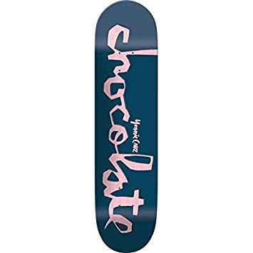
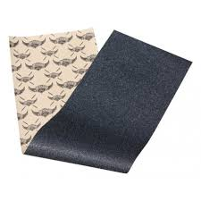
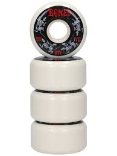
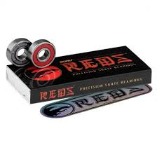
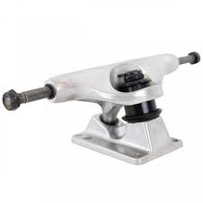

 La plancheLe gripLes rouesLes roulementsLes trucks
L'histoire du skate
Le skateboard est né dans les années 50 sur les côtes d'Hawaii et en californie. Il tire son origine du surf. En effet, les surfeurs de l'époque voulant continuer à ressentir la sensation de la glisse malgré l'absence de vague ont inventé le skate. La pratique sportive s'est donc développé dans les "pools" qui était des piscines asséché.
L'année 1978 sera celle qui révolutionnera le monde du skate avec l'apparition du "ollie". Cette figure, permettant de sauter, revolutionnera complétement la pratique du skateboard en ouvrant la porte à de toutes nouvelles figure toujours plus impressionnante.
On peut également s'attarder sur le tout premier 900. Cette figure, réalisée en 1999 aux x games, marquera de par sa complexité l'histoire du sport.
L'influence du skate sur le reste du monde
Bien qu'à l'origine le skate était pratiqué par des petits groupe en marge de la société, le skate a commencé par la suite à influencer d'autres domaines.
La musique
Quand on parle de musique en lien avec le skate on pense très vite au skate punk, un dérivé du punk rock. On peut citer par exemple le groupe Black Flag qui sera fortemment influencer par ce style musical.
Initialement considéré comme une forme d’expression personnelle anarchique pratiquée par un petit groupe de parias, le skate a explosé sur la côte ouest de l’Amérique à la fin des années 70 et 80, en même temps que le punk rock américain. Avec une idéologie similaire, et la Californie étant l’environnement idéal pour le skate et la musique punk, le genre du skate punk est né, influençant des groupes importants tels que Black Flag et NOFX. Alors que le skate devenait de plus en plus accepté par le grand public, la musique est devenue plus inclusive, élargissant les sons commerciaux des groupes tels que Blink 182 et The Offspring dans les années 80 et 90.